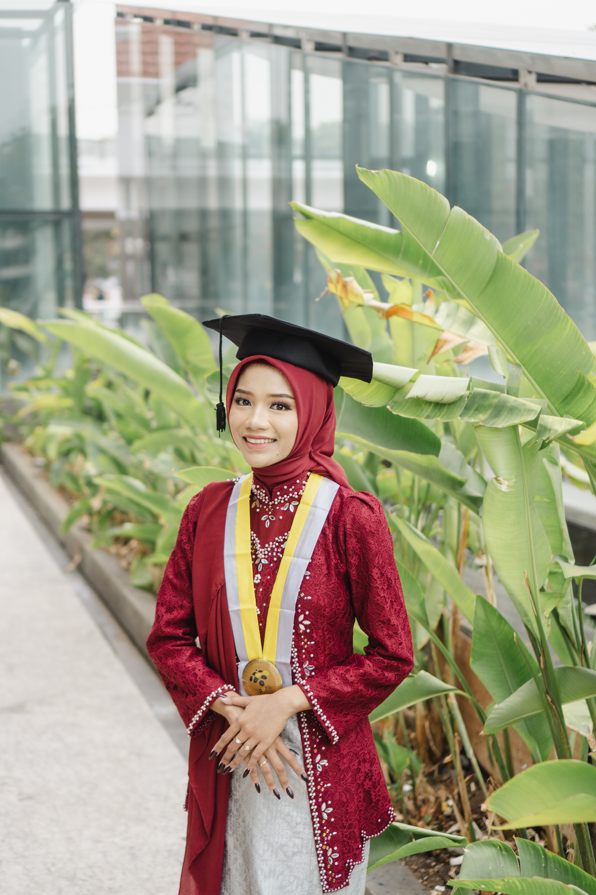
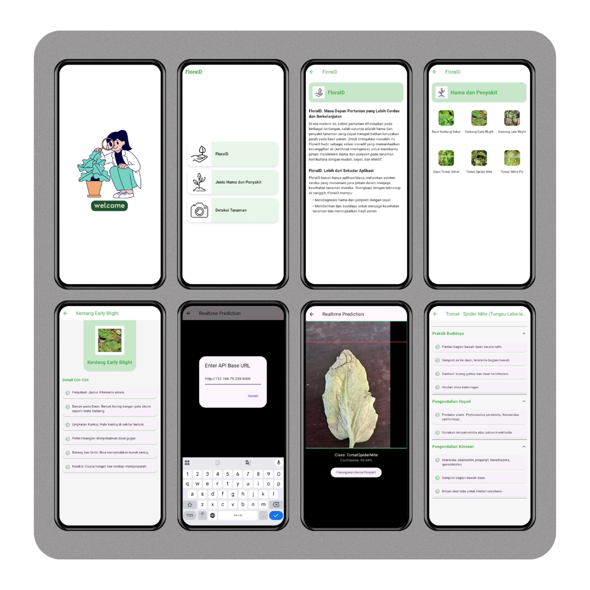
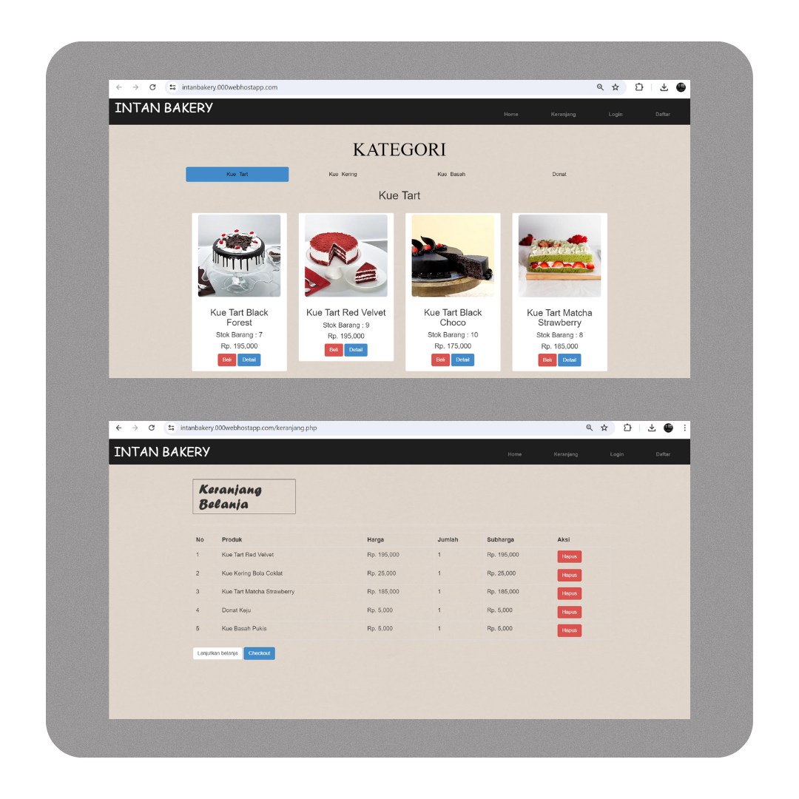
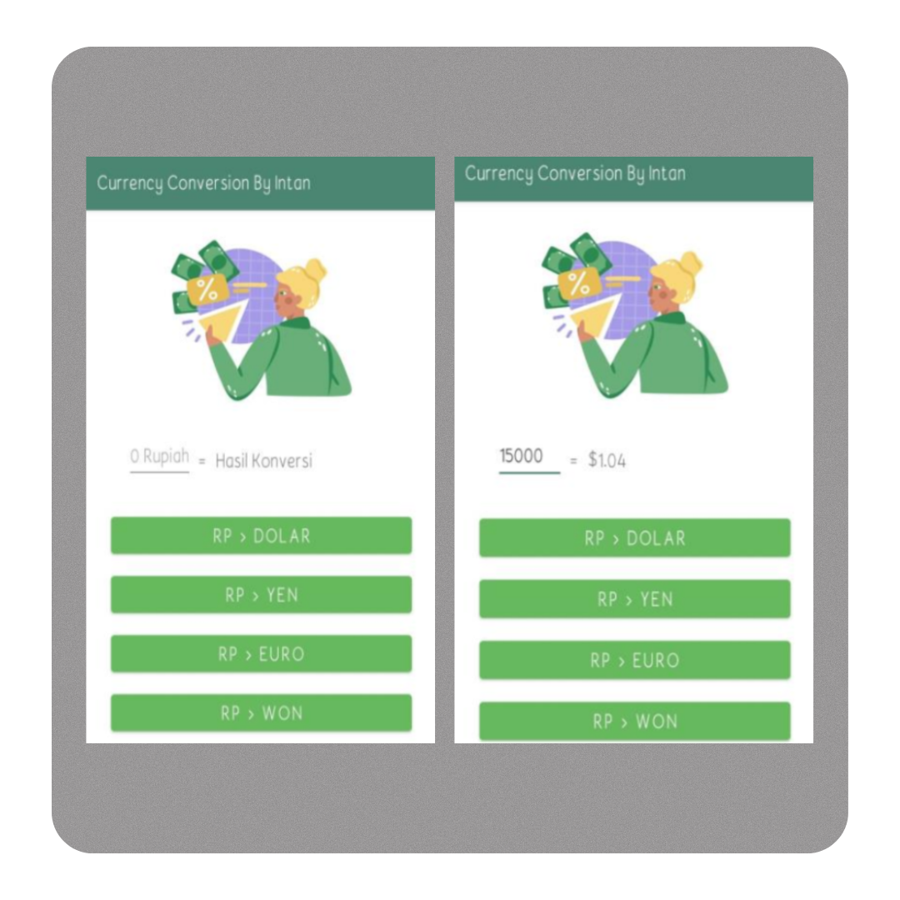
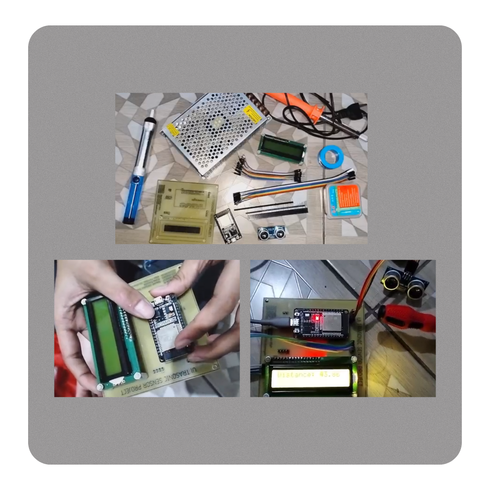

Dokumentasi ini menampilkan karya dan proyek yang membentuk kompetensi sekaligus menorehkan jejak inovasi di bidang teknologi.

Halo! Saya Intan Permata Wardhaningsih, lulusan Program Studi Sarjana Terapan Teknik Telekomunikasi di Politeknik Elektronika Negeri Surabaya (PENS).
Saya memiliki ketertarikan di bidang Artificial Intelligence, Machine Learning, dan Mobile App Development.
Saya pernah membuat proyek akhir berjudul “Deteksi Hama dan Penyakit Tanaman Hortikultura untuk Mendukung Smart Farming Menggunakan Metode LSTM” yang menggabungkan kecerdasan buatan dengan teknologi pertanian modern.

Aplikasi mobile berbasis metode LSTM yang dikembangkan menggunakan Flutter, mampu mendeteksi daun yang terserang penyakit dan hama pada tanaman tomat dan kentang.

Website toko roti online bernama "Intan Bakery" yang memungkinkan user melihat katalog produk dan memesan roti secara online dengan metode pembayaran yang aman.

Aplikasi konversi mata uang cepat dan mudah, dikembangkan dengan Android Studio untuk pengalaman pengguna yang optimal.

Sistem deteksi objek berbasis sensor ultrasonik dengan implementasi desain PCB, hardware, dan pemrograman Arduino.